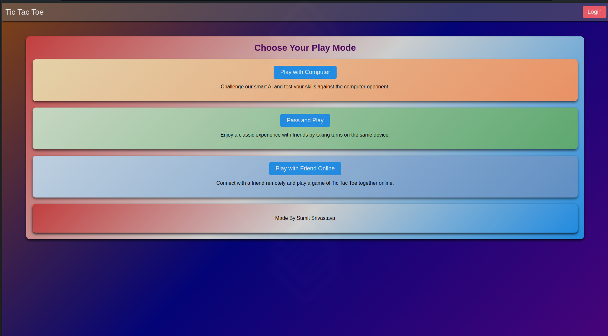

Overview
Undefeatable Tic Tac Toe is a web-based game that showcases an AI opponent using the Minimax algorithm, ensuring optimal decision-making in a zero-sum game environment. Players can challenge themselves against an AI that guarantees a win or draw, making it a compelling JavaScript project for game enthusiasts.
Reason for Creating Undefeatable Tic Tac Toe
The motivation behind developing this game stemmed from a challenge posed by a friend who wanted a game
where he couldn't win no matter how hard he tried.
Undefeatable Tic Tac Toe fulfills this challenge by
employing the Minimax algorithm, ensuring an AI opponent that guarantees either a win or a draw, making
victory against it nearly impossible.
Features
- Undefeatable AI: Built with the Minimax algorithm to analyze and choose optimal moves.
- Interactive Gameplay: Players choose their symbol and take turns placing moves on the 3x3 grid.
- Clear Board Representation: Visual representation of game state for easy follow-up.
Technologies Used
- JavaScript for game logic and interaction.
- HTML and CSS for user interface design and structure.
- Minimax Algorithm for AI decision-making.
Images
Landing page of the Undefeatable Tic Tac Toe game.
Screenshot of the Undefeatable Tic Tac Toe game board during gameplay.
How to Play
- Click the Button below to play in your browser or clone the repository.
- The AI calculates its move automatically, and the game continues until a winner is determined or a draw occurs.
Running the Project
- Ensure you have a code editor or IDE set up for JavaScript development.
- Open `index.html` in your preferred browser to start the game.
Challenges and Improvements
- Difficulty Levels: Implementing varying AI difficulty levels by adjusting Minimax search depth.
- Enhanced UI: Improving visual appeal with animations.
- Error Handling: Implementing robust error handling for invalid moves.
Disclaimer
While the AI aims to be unbeatable, unforeseen circumstances or bugs may affect gameplay. Player feedback is valuable for continuous improvement.
Thank You for Playing!
Experience the challenge of Undefeatable Tic Tac Toe and test your skills against an advanced AI opponent.